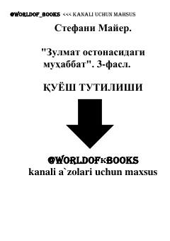

ZOBella, Edvard va Jeyykob o'rtasidagi murakkab muhabbat va tanlovlar haqidagi asar.
Ushbu asar mashhur 'Sohil' yoki 'Alacakaranlık' (Twilight) seriyasining uchinchi qismi bo'lib, Bella, Edvard va Jeyykob o'rtasidagi murakkab hissiy munosabatlarni hikoya qiladi. Qahramonlar yana bir bor qalb va burch, muhabbat va oila o'rtasidagi og'ir tanlov qarshisida qolishadi. Asar voqealari sirli va hayajonli burilishlarga boy.